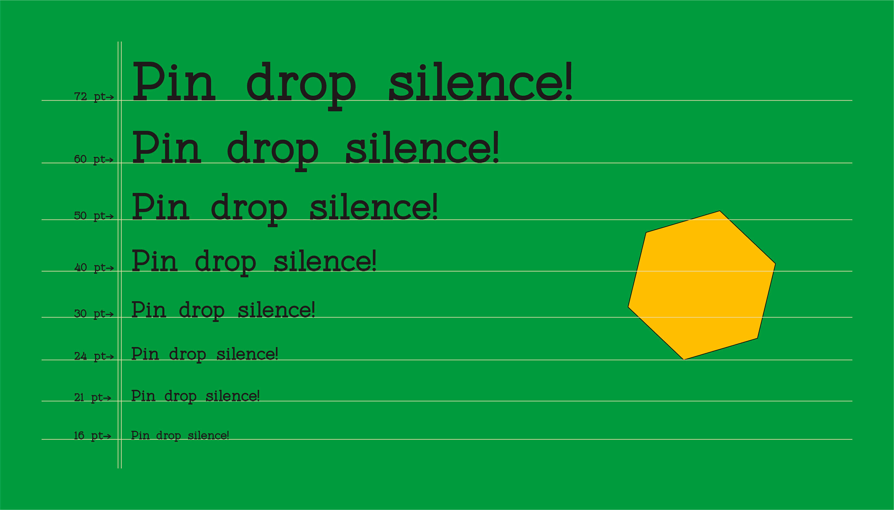

1. SK Coisa
SK Coisa - декоративный наклонный геометрический шрифт с дерзким характером. Его острые формы и углы, да и вся конструкция вопиют о его необыкновенности. Он необычный и выделяющийся. SK Coisa построен на контрасте округлых и резких геометрических форм, поэтому его внешний вид сложно обойти стороной. Шрифт имеет как заглавные, так и строчные буквы. Он поддерживает базовую, расширенную кириллицу и латинский алфавит, а также многие другие языки и наборы символов. Если вы хотите, чтобы ваш дизайн кричал, то SK Coisa - это именно то, что вам нужно!
2. MIGRA
Migra - это шрифт с остроконечными засечками, вдохновленный перелетными птицами. Его вес варьируется от строгого до мощного черного. Этот шрифт, наполненный большим количеством жестов курсивом и различными специальными лигатурами, так что, он обязательно добавит блеска и изящества любому вашему дизайну.
3. SK Pangramma
SK Pangramma - современный универсальный геометрический шрифт. Для большей универсальности он был разработан в двух стилистических вариациях: Sans Serif и Slab Serif. Гарнитура SK Pangramma названа так, потому что она поддерживает более 200 языков, включая расширенный латинский алфавит, кириллицу и даже греческий. Благодаря широкому набору символов, альтернатив и двум стилистическим вариациям, этот шрифт отлично подходит для дизайн-проектов любой сложности, будь то полиграфическая продукция или веб-дизайн.
4. EIKO
Eiko - бесспорное воплощение элегантности и утонченности. Он вдохновлен работами Эйко Ишиока, талантливой японской художницы, шрифт стремится передать тот же аспект ее работы в этих типографских исследованиях. Шрифт имеет высокую контрастность, так что подойдет для многих проектов.
5. Eskool
Eskool - это бесплатный шрифт, идеально подходящий для заголовков и подзаголовков. Шрифт основан на школьном опыте 90-х годов. Подойдет для оформления образовательных продуктов , заголовков , логотипов и журналов.
6. CURRENT
CURRENT - жирный и красивый шрифт без засечек, разработанный Мэттом Пендрилом. Он отлично работает в качестве заголовка на рекламных щитах, плакатах и веб-страницах. работает в качестве заголовка на рекламных щитах, плакатах и веб-страницах. Так что, попробуйте его в своем следующем проекте!
7. Sunmora
Sunmora от Ardyana Types - классический декоративный шрифт с засечками с восьмидесятых годов. Это продуманный изгиб и уникальная форма хвоста с 12 весами, от тонкого до жирного. Sunmora идеально подходит для: заголовков, логотипов, дизайна одежды, дизайна веб-сайтов, цветочных изображений, обложек журналов, плакатов и многого другого! Этот шрифт включает произвольные лигатуры. Если вам нужен стильный шрифт, который гарантированно привлекает внимание, то Sunmora справится с этой задачей!
8. Lucky Chang
Lucky Change, Youthlabs Studio, - это новый шрифт с засечками стильной и премиальной формы. Этот шрифт вдохновлен простой и роскошной типографикой. Lucky Change - очень универсальный шрифт, вы можете использовать этот шрифт для различных дизайнов.